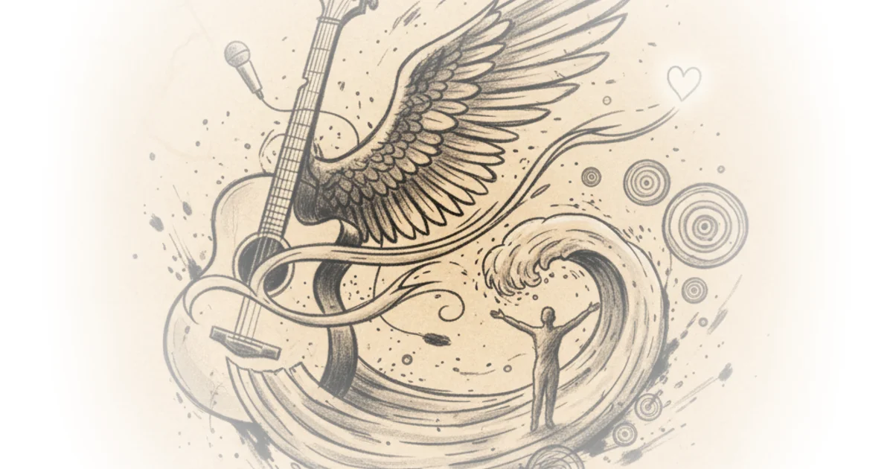

Cain Wrote the 90s Greatest Ballad## The Making of a Southern Balladeer
Edwin McCain didn't start in Nashville or Los Angeles. He started on a wooden deck next to a duck pond in Hilton Head, South Carolina, playing three nights a week for $7.50 a gig at a chain restaurant called Wild Wings.

That venue — with its dirt floor worn down by decades of boot-wearing patrons — was where McCain's career began. And it shaped him in ways he didn't realize until years later.
When McCain first moved to Hilton Head, he was only about 20 years old. He played his own originals alongside covers — Jimmy Hendrix, Seal, Jane's Addiction, Blues Traveler, Widespread Panic. But the songbooks he tried to learn from had wrong chords and wrong tabs, so he stopped trying to play other people's music altogether.
I ended up working on hybrids of songs I loved. Once I could get it to where I could sing and play along with it, it didn't matter whether I was playing all the exact right chords.
One thing held him back: his 12-string acoustic guitar. The instrument required so much pressure that he chronically left the B and E string open — a lazy habit that actually became a signature feature of his playing style.
The Voice That Never Quit
McCain was playing four-hour sets, four nights a week — sometimes five on Saturdays. His tour manager later told him his vocal cords were "Teflon-coated titanium" because of how much screaming he did without damaging his voice.
The gigs forced what McCain calls incredible endurance. Older musicians warned him that playing that many shows would ruin his voice. He ignored them.
"I couldn't believe my good fortune," McCain says. "Being 20 and 21 years old, playing in front of people who definitely weren't there to hear you — if you can figure out how to entertain those people, you can entertain anyone."
The strategy was simple: don't engage the audience with questions like "Where are you from?" Just start playing with wild abandon. Play your heart out every night.
Within months, his deck at Wild Wings was packed. A couple hundred people every time they played. The crowd came for cheap beer and stayed for the music.
Watching the Touring Acts
Meanwhile, all the touring acts were passing through Augusta. All Good Music Company, Blues Traveler, Widespread Panic, Dave Matthews — everyone passed through the Old Post Office in Hilton Head, a straight-up rock club where McCain was front and center.
One band called Egypt was astonishingly great: they were the Chili Peppers before the Chili Peppers, but more technically savvy. The guitarist Joe Lawler was one of those shredders who made audiences sit there and ask, "How did he just do what he just did?"
When the Aquarium Rescue Unit showed up to open for McCain's friend Jason's band — Uncle Mingo — he turned to his friend halfway through the gig and said, "I can't believe you have to go on after this." The level of musicianship was insane.
It occurred to him: if he wanted this to happen, he needed to leave his comfortable life in Hilton Head, find a drummer and bass player, and give it a shot.
The U-Haul Years
He grabbed a drummer named Todd and eventually settled on Scott Benovich from Charleston, who had been in a band called Passenger. He was a heavy metal guy — an unbelievable bass player who looked almost exactly like Sebastian Bach in his early days.
The band started playing fraternity and sorority houses across Raleigh, Durham, Chapel Hill — what they called the honey hole because you didn't have far to drive. Each gig paid $750.
They bought their own PA system: some SP4s, JBL subs, an old English console. Everything went in a U-Haul truck. The back half held the gear; the front half held the band. Two people sat in the cab like a clown car when they arrived at venues.
McCain built a little bunk in the back of the truck, right over the exhaust pipe. He slept there beautifully, bouncing down the road, thinking he was made for this life.
"It turns out my bunk was right over the exhaust pipe," McCain later realized. "Probably just monoxide on the edge of death."
They made enough money to go play in Texas. The gigs kept coming.
Critics might note that McCain's version of events — told in a long, self-referential interview format — leaves some gaps. The actual recording process and label details aren't explored. But his story captures something real about how southern musicians built careers: through endurance, improvisation, and the kind of reckless commitment that nearly killed you.
Bottom Line
McCain's journey from Hilton Head deck to national balladry is less about talent than discipline — 10 shows a week, four hours each, for years. That grueling schedule forged his voice and his stage presence. His biggest vulnerability is that he doesn't fully explain how he transitioned from the fraternity circuit to getting a record deal. But his story of playing for people who weren't listening — and winning them over anyway — is where the real magic happened.", "pull_quote": "If you can figure out how to entertain those people, you can entertain anyone", "bottom_line": "McCain's journey from Hilton Head deck to national balladry is less about talent than discipline — 10 shows a week, four hours each, for years. That grueling schedule forged his voice and his stage presence. His biggest vulnerability is that he doesn't fully explain how he transitioned from the fraternity circuit to getting a record deal. But his story of playing for people who weren't listening — and winning them over anyway — is where the real magic happened.